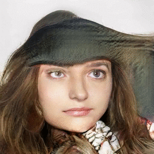

PGDrive: A highly flexible open-ended driving simulator
1The Chinese University of Hong Kong
2Sense Time Inc.
3Zhejiang University
2Sense Time Inc.
3Zhejiang University
| Pose | Age | Gender |
| Expression | Eyeglasses | Artifacts |
|  |
@inproceedings{shen2020interpreting,
title = {Interpreting the Latent Space of GANs for Semantic Face Editing},
author = {Shen, Yujun and Gu, Jinjin and Tang, Xiaoou and Zhou, Bolei},
booktitle = {CVPR},
year = {2020}
}
@article{shen2020interfacegan,
title = {InterFaceGAN: Interpreting the Disentangled Face Representation Learned by GANs},
author = {Shen, Yujun and Yang, Ceyuan and Tang, Xiaoou and Zhou, Bolei},
journal = {TPAMI},
year = {2020}
}
Comment: Dissects neurons in GANs from the perspective of spatial feature map.